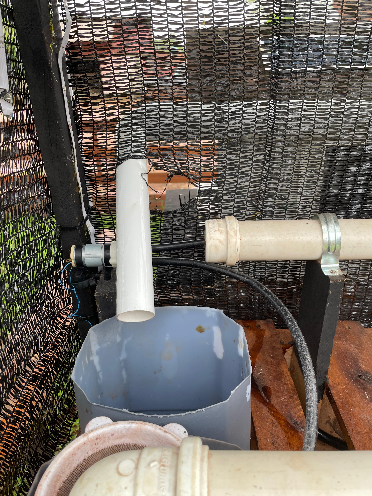
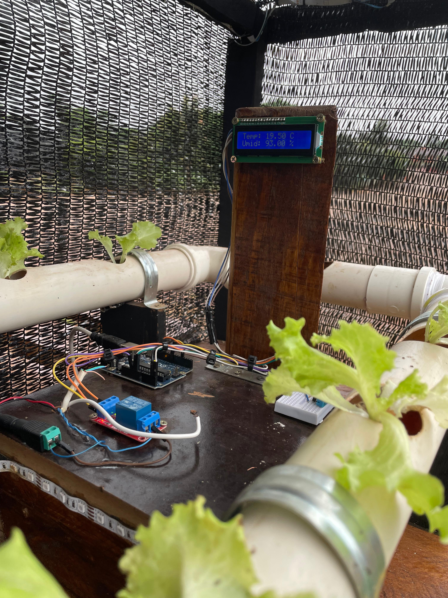
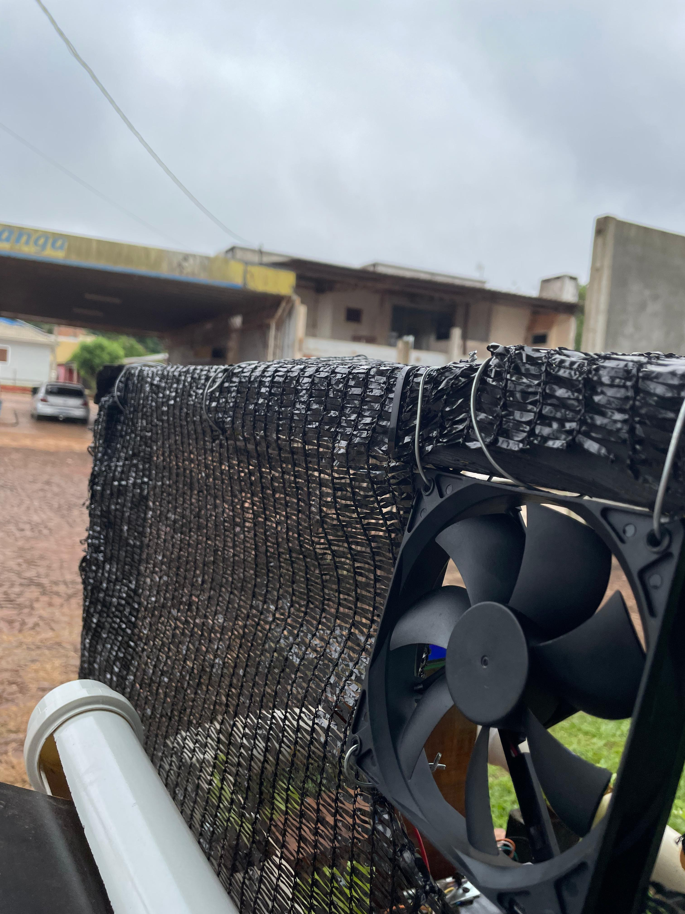

Benefícios da Hidroponia
Uso Eficiente da Água
Implementamos uma solução sustentável que aproveita a água da chuva captada pelo telhado do refeitório e a reutiliza no sistema hidropônico. Toda a água que cai sobre o telhado é direcionada por calhas para um reservatório localizado dentro de uma estufa. Ao chegar no reservatório, é feito um controle rigoroso do pH para garantir que a água esteja adequada para o cultivo hidropônico. Esse controle é essencial para assegurar que as plantas possam absorver os nutrientes de forma eficiente e se desenvolverem de maneira saudável. Após o ajuste do pH, a água é utilizada diretamente na hidroponia, onde serve como meio para nutrir as plantas sem a necessidade de solo. Essa prática não apenas reduz a demanda por água potável, mas também promove um uso mais consciente dos recursos disponíveis. Além disso, ao reutilizar a água da chuva, diminuímos o impacto ambiental e contribuímos para a preservação dos recursos hídricos. Com essa abordagem, integramos captação e reaproveitamento da água em um ciclo sustentável, unindo eficiência e responsabilidade ecológica. A solução reflete um compromisso com práticas mais conscientes e mostra como pequenos ajustes podem gerar grandes benefícios para o meio ambiente e a produção de alimentos..
Maior Controle sobre Nutrientes
Desenvolvemos também um aplicativo para computadores e notebooks que calcula, de forma precisa, a quantidade exata de nutrientes e água necessária para cada planta no sistema hidropônico. O software foi criado por meio de programação voltada para otimizar o processo de cultivo, oferecendo informações personalizadas com base nas características específicas de cada espécie plantada. O aplicativo simplifica o trabalho do cultivador ao indicar a dose ideal de nutrientes e o volume de água para cada fase do desenvolvimento das plantas. Com isso, o sistema garante uma nutrição equilibrada, evitando tanto o desperdício de recursos quanto a aplicação inadequada de insumos. A interface foi projetada para ser intuitiva, facilitando o uso até mesmo para quem não possui experiência técnica em agricultura de precisão. Essa ferramenta contribui para aumentar a eficiência do cultivo hidropônico e melhorar os resultados, ao mesmo tempo em que reduz o impacto ambiental. Ao integrar tecnologia e sustentabilidade, o aplicativo promove uma gestão mais consciente dos recursos e facilita o trabalho diário do produtor, tornando o sistema mais acessível e eficiente.
Cultivo em Espaços Pequenos
A hidroponia é uma técnica versátil que pode ser implementada em pequena escala, tornando-se ideal para espaços reduzidos, como varandas de apartamentos, quintais pequenos e até terraços. Por não depender de solo, esse sistema permite cultivar hortaliças, temperos e flores em estruturas compactas, utilizando apenas água enriquecida com nutrientes. Isso possibilita que pessoas que vivem em áreas urbanas, sem acesso a grandes terrenos, possam produzir alimentos frescos e saudáveis diretamente em casa. Uma das grandes vantagens da hidroponia é a facilidade de adaptação. Com tubos ou vasos adequados e um pequeno reservatório, é possível montar um sistema eficiente em um espaço mínimo. Além disso, como o consumo de água é controlado, a técnica se mostra altamente sustentável, reutilizando a água e evitando desperdícios. Isso é especialmente vantajoso em cenários urbanos, onde a preservação de recursos naturais é uma preocupação crescente. Esse tipo de cultivo também promove maior independência alimentar e reduz a necessidade de comprar produtos que muitas vezes são cultivados com o uso intensivo de agrotóxicos. Com a ajuda do nosso aplicativo, o cultivador pode administrar facilmente a nutrição e a hidratação das plantas, mesmo em sistemas pequenos, garantindo um crescimento saudável e otimizado. Além de ser uma solução prática e sustentável, a hidroponia em casa contribui para um estilo de vida mais consciente e proporciona o prazer de cultivar e consumir alimentos frescos. Assim, essa técnica se apresenta como uma excelente opção para quem busca produzir seus próprios alimentos de forma eficiente, mesmo em espaços limitados.
Redução de Pesticidas
A hidroponia é uma prática de cultivo que se destaca pela redução significativa da utilização de agrotóxicos e pesticidas, em comparação com a agricultura tradicional que utiliza solo. Isso se deve principalmente ao fato de que, na hidroponia, as plantas crescem em um ambiente controlado e livre de terra. A ausência de solo dificulta o desenvolvimento de pragas e doenças comuns que afetam as culturas, uma vez que muitos insetos e patógenos dependem da presença de terra para se proliferar. Além disso, o cultivo hidropônico permite um monitoramento mais rigoroso das condições de crescimento, como pH, temperatura e umidade. Essa capacidade de controle reduz a necessidade de intervenções químicas, pois os cultivadores podem identificar e tratar problemas de forma mais precisa e proativa. Em ambientes hidropônicos, é possível adotar práticas de manejo integrado de pragas (MIP), que priorizam soluções biológicas e mecânicas antes de recorrer a produtos químicos. Outro ponto importante é que a hidroponia facilita a rotação de culturas e a diversificação das plantas cultivadas, o que também ajuda a prevenir infestações. Com diferentes tipos de plantas sendo cultivadas em ciclos, cria-se um ambiente menos propício para o estabelecimento de pragas e doenças. Isso se traduz em uma produção mais saudável e sustentável, com menos necessidade de substâncias químicas. A redução do uso de agrotóxicos e pesticidas não só beneficia a saúde dos consumidores, ao proporcionar alimentos mais limpos e saudáveis, mas também contribui para a preservação do meio ambiente. Com menos produtos químicos sendo liberados no solo e nas águas, a hidroponia ajuda a mitigar a contaminação ambiental e os impactos negativos da agricultura convencional. Portanto, a hidroponia não apenas oferece uma solução prática e eficiente para o cultivo de alimentos, mas também se destaca como uma alternativa mais segura e sustentável, promovendo a saúde das pessoas e do planeta.
Menor Dependência do Clima
Através da nossa tecnologia de automação, a hidroponia se torna uma solução viável independentemente das condições climáticas externas. Com sistemas de controle de refrigeramento e iluminação integrados na estufa, conseguimos manter um ambiente ideal para o crescimento das plantas, mesmo em climas instáveis. Isso significa que os cultivadores não precisam se preocupar com as variações de temperatura e iluminação que podem afetar o desenvolvimento das culturas, garantindo assim uma produção contínua e saudável. O controle de temperatura é realizado por meio de um sistema automatizado que ativa a refrigeração sempre que a temperatura ultrapassa os 24 graus Celsius. Essa funcionalidade é essencial, pois temperaturas elevadas podem estressar as plantas e comprometer sua saúde e produtividade. Com a automatização, a bomba de refrigeração pode ser programada para ligar e desligar em intervalos regulares, garantindo que o ambiente dentro da estufa permaneça sempre em condições ótimas para o cultivo. Além disso, a alimentação das plantas é feita pela diluição precisa dos nutrientes na água. A programação do sistema permite que a bomba de nutrientes seja acionada automaticamente, garantindo que as plantas recebam a quantidade ideal de nutrientes em intervalos específicos. Isso não apenas maximiza a eficiência no uso dos insumos, mas também assegura que as plantas tenham acesso contínuo aos elementos essenciais para seu crescimento. Através dessa automação, conseguimos otimizar o uso dos recursos, reduzir o trabalho manual e aumentar a produtividade, tudo isso enquanto garantimos que as plantas tenham as melhores condições para se desenvolverem. Essa tecnologia não só melhora a eficiência do sistema hidropônico, mas também permite que os cultivadores tenham maior controle sobre o ambiente de cultivo, resultando em colheitas mais saudáveis e abundantes. Portanto, a nossa solução de automação se destaca como uma inovação que transforma a hidroponia em uma prática acessível e altamente eficiente, independentemente das condições climáticas externas.
Geração de Energia
A energia utilizada em nosso projeto de hidroponia é gerada de forma sustentável por meio de placas solares. Essa fonte de energia renovável não apenas minimiza o impacto ambiental do cultivo, mas também reduz os custos operacionais a longo prazo. As placas solares capturam a luz solar e a convertem em eletricidade, que é utilizada para alimentar todos os componentes do sistema, desde as bombas de água até os controles de iluminação e refrigeração. Para garantir uma distribuição eficiente da energia, implementamos um controlador que gerencia a carga elétrica para cada componente. Esse controlador assegura que cada parte do sistema receba a quantidade adequada de energia, evitando sobrecargas e garantindo o funcionamento otimizado de todos os equipamentos. Essa tecnologia é essencial para manter a estabilidade do sistema e a eficiência na utilização da energia gerada. Além disso, contamos com uma bateria que armazena a energia gerada pelas placas solares. Essa bateria permite que o sistema funcione mesmo em períodos de baixa luminosidade, como durante a noite ou em dias nublados. Assim, os cultivadores têm a segurança de que todos os componentes continuarão a operar de maneira eficiente, independentemente das condições climáticas. A combinação de energia solar com um sistema de controle de carga e armazenamento em bateria representa uma abordagem inovadora e sustentável para a hidroponia. Essa solução não apenas promove a autonomia energética do projeto, mas também contribui para a viabilidade a longo prazo, permitindo que cultivadores em qualquer local mantenham um sistema produtivo e sustentável, mesmo em regiões com limitações de infraestrutura elétrica.
Aplicações e Tecnologias
No primeiro semestre de 2024, alunos da Escola Estadual Visconde de Cerro Alegre desenvolveram um projeto inovador focado em sustentabilidade, visando automatizar um sistema de cultivo hidropônico para a produção saudável de alimentos para os refeitórios escolares. Motivados pela preocupação com o uso excessivo de agrotóxicos e pela busca de alternativas mais saudáveis, a equipe, composta por três alunos, decidiu explorar a hidroponia como uma solução viável e, além disso, criar um sistema automatizado que pudesse ser facilmente replicado em ambientes escolares. A maquete construída pela equipe ilustra uma estufa automatizada que incorpora diversas tecnologias sustentáveis. A principal inovação foi o uso de componentes eletrônicos simples, programados em C++, para controlar uma bomba de água com base em dados de sensores. Um sensor DHT11 foi implementado para monitorar a temperatura e a umidade do ambiente, e esses dados são exibidos em um display LCD, permitindo um controle eficiente do microclima, essencial para o cultivo de verduras livres de agrotóxicos. Um dos aspectos mais interessantes do projeto é o reaproveitamento da água de irrigação. A água da chuva é captada por calhas e armazenada em um reservatório, permitindo sua reutilização e promovendo a economia de recursos naturais. Essa prática é combinada com a automação do sistema, que não só otimiza a irrigação, mas também minimiza o desperdício. Além disso, a energia utilizada no sistema é gerada por placas solares, aumentando ainda mais a sustentabilidade do projeto. Essa energia é armazenada em uma bateria de 12V/10Ah, gerida por um controlador que distribui a carga de forma eficiente para cada componente do sistema. Para garantir o funcionamento ideal, um controlador de carga, acionado por células fotovoltaicas, ajusta a energia gerada com base nas necessidades do sistema. Dessa forma, garantimos que todos os componentes, incluindo o sistema de refrigeração e os controles de iluminação, operem de maneira eficiente, independentemente das condições climáticas externas. Outra inovação foi a implementação de LEDs RGB na estufa, onde diferentes cores de luz foram exploradas para otimizar o crescimento das plantas, eliminando a necessidade de aditivos químicos. A iluminação é controlada de maneira automatizada, permitindo a adaptação às necessidades específicas das culturas em diferentes estágios de desenvolvimento. Para simplificar o gerenciamento do cultivo, a equipe desenvolveu um software que controla a quantidade de nutrientes diluídos na água, de acordo com a litragem e o tipo de planta cultivada. O programa permite o cadastro de plantas e nutrientes, calculando automaticamente a quantidade necessária para um crescimento saudável, minimizando erros e aumentando a eficiência no cultivo. O projeto visa, assim, promover a adoção de tecnologias que aumentem a eficiência agrícola nas escolas, contribuindo para uma alimentação saudável e sustentável. Com a automação do sistema hidropônico, o uso de energia solar e a reutilização da água, os alunos não apenas criaram uma solução prática para o cultivo de alimentos, mas também inspiraram outras instituições a adotarem práticas semelhantes, promovendo uma educação ambiental integrada e consciente. Essa iniciativa representa uma grande oportunidade para ensinar os alunos sobre sustentabilidade e responsabilidade ambiental, preparando-os para um futuro mais consciente e sustentável.